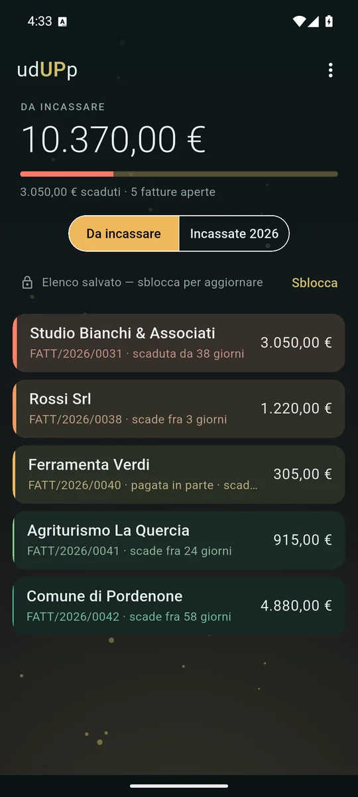
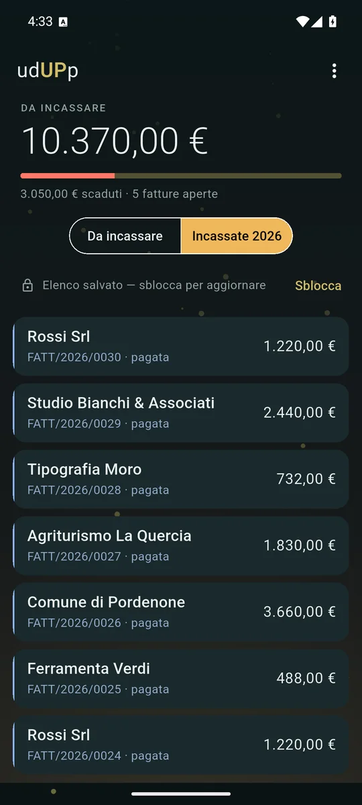
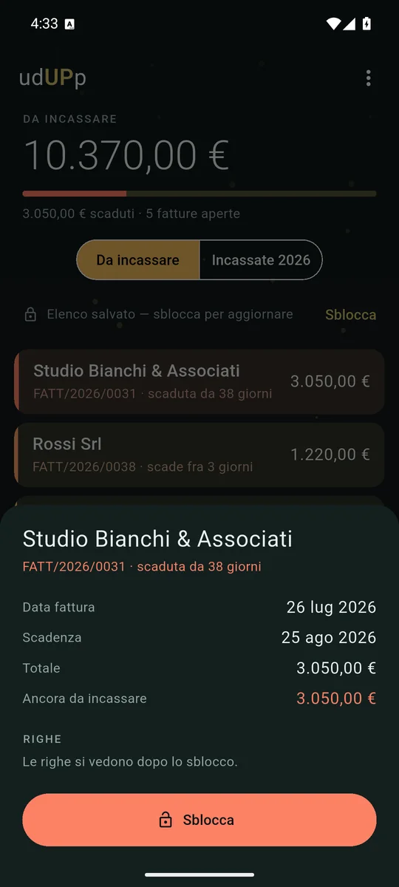
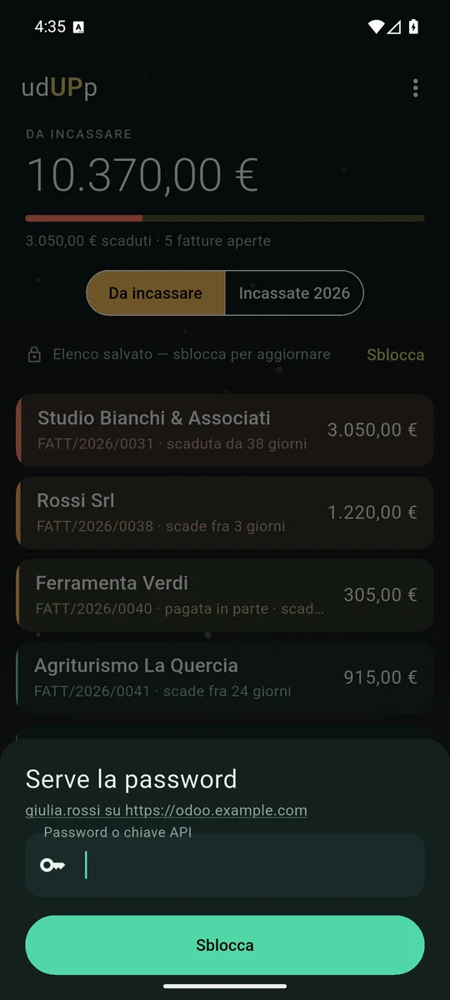

ItalianoEnglish
Si apre su un numero: quanto devi ancora incassare. Sotto, una barra che dice quanta parte è già scaduta, e le fatture aperte del tuo Odoo, dalla più urgente. Ogni fattura cambia colore da sola con il passare dei giorni — verde quando c'è tempo, ambra quando la scadenza è vicina, corallo quando è passata da settimane — e il telefono ti dice chi sollecitare prima ancora che tu legga un nome.
Quando il bonifico arriva, tocchi la fattura, scegli la data e premi Segna come pagata: il pagamento finisce su Odoo con la stessa procedura del client web, e la fattura esce dall'elenco mentre il totale scende.

Il totale, la parte scaduta, e le fatture dalla più urgente. Il colore è la scadenza. 
Le incassate dell'anno, da confrontare con l'estratto conto. 
Una fattura: date, importi, righe, e il pulsante per segnarla pagata. 
Server e utente li ricorda. La password, mai.
Cosa fa
- Da incassare: le fatture clienti confermate, non pagate o pagate in parte, ordinate per quanto premono — non per data, perché una fattura piccola scaduta da due mesi e una grande che scade domani non sono la stessa urgenza.
- Incassate: quelle pagate dell'anno in corso, l'elenco che si confronta con la banca.
- Il dettaglio di ogni fattura, con le righe.
- Segna come pagata, con la data che scegli. Usa la «Registra pagamento» di Odoo, con il tuo registro predefinito: quello che il tuo commercialista si aspetta di trovare, compreso ciò che la localizzazione italiana ci aggancia.
- Si apre anche senza rete: l'ultimo elenco resta sul telefono e si legge in metropolitana. Per aggiornarlo serve la password.
- In italiano e in inglese, secondo la lingua del telefono.
Per chi è
Per chi fattura con Odoo 18, Community o Enterprise, su un server raggiungibile in HTTPS — il proprio, quello dello studio, Odoo.sh. È la versione per cui esiste la localizzazione fiscale italiana dell'OCA, e udUPp passerà alla successiva quando ci passerà lei. Su Odoo Online l'accesso esterno è disponibile solo con il piano Custom.
La password non viene mai salvata
udUPp è l'unica app MCMA con un accesso, ed è il tuo: l'account Odoo che hai già, sul server che hai già. Nessun account nostro, nessun server nostro in mezzo — la richiesta parte dal telefono e arriva a Odoo.
L'indirizzo del server e il nome utente restano sul telefono, così al
prossimo avvio basta la password. La password no: vive in memoria finché
l'app è aperta, e quando il sistema la chiude se ne va con lei. Un telefono
perso non consegna l'accesso alla tua contabilità. Gli indirizzi
http:// sono rifiutati, perché la password viaggerebbe in
chiaro.
I tuoi dati restano tuoi
Sul telefono restano server, utente e una copia delle fatture che vedi; «Esci e dimentica» li cancella tutti. Le fatture vere stanno su Odoo e non passano da noi. Fuori dal telefono va il traffico verso il tuo server e quello che raccoglie Google AdMob per il banner, spiegato nell'informativa.
Come si paga
Con un banner ancorato in fondo, e un annuncio a schermo intero ogni tanto, solo dopo che hai segnato una fattura come pagata — mai fra il tocco e il lavoro. Nessun abbonamento.
Dove trovarla
udUPp non è un prodotto di Odoo S.A. né è affiliato a Odoo S.A. Odoo è un marchio di Odoo S.A.